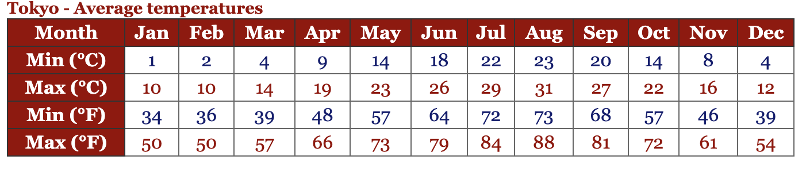

Welcome to Tokyo
Tokyo, officially Tokyo Metropolis (東京都, Tōkyō-to), is one of the 47 prefectures of Japan. It has served as the Japanese capital since 1869, its urban area housing the Emperor of Japan and the Japanese government. Tokyo forms part of the Kantō region on the southeastern side of Japan's main island, Honshu, and includes the Izu Islands and Ogasawara Islands. Tokyo was formerly named Edo when Shōgun Tokugawa Ieyasu made the city his headquarters in 1603. It became the capital after Emperor Meiji moved his seat to the city from Kyoto in 1868; at that time Edo was renamed Tokyo. The Tokyo Metropolis formed in 1943 from the merger of the former Tokyo Prefecture (東京府, Tōkyō-fu) and the city of Tokyo (東京市, Tōkyō-shi). Tokyo is often referred to as a city but is officially known and governed as a "metropolitan prefecture", which differs from and combines elements of a city and a prefecture, a characteristic unique to Tokyo.
Climate
The former city of Tokyo and the majority of mainland Tokyo lie in the humid subtropical climate zone (Köppen climate classification Cfa), with hot, humid summers and generally cool winters with cold spells. The region, like much of Japan, experiences a one-month seasonal lag, with the warmest month being August, which averages 26.4 °C (79.5 °F), and the coolest month being January, averaging 5.2 °C (41.4 °F). The record low temperature is −9.2 °C (15.4 °F) on January 13, 1876, while the record high is 39.5 °C (103.1 °F) on July 20, 2004. The record highest low temperature is 30.3 °C (86.5 °F) on August 12, 2013, making Tokyo one of only seven observation sites in Japan that have recorded a low temperature over 30 °C (86.0 °F). Annual rainfall averages nearly 1,530 millimetres (60.2 in), with a wetter summer and a drier winter. Snowfall is sporadic, but does occur almost annually. Tokyo also often sees typhoons every year, though few are strong. The wettest month since records began in 1876 was October 2004, with 780 millimetres (30 in) of rain, including 270.5 mm (10.65 in) on the ninth of that month; the last of four months on record to observe no precipitation is December 1995. Annual precipitation has ranged from 879.5 mm (34.63 in) in 1984 to 2,229.6 mm (87.78 in) in 1938.

Environment
Tokyo has enacted a measure to cut greenhouse gases. Governor Shintaro Ishihara created Japan's first emissions cap system, aiming to reduce greenhouse gas emission by a total of 25% by 2020 from the 2000 level. Tokyo is an example of an urban heat island, and the phenomenon is especially serious in its special wards. According to the Tokyo Metropolitan Government, the annual mean temperature has increased by about 3 °C (5.4 °F) over the past 100 years. Tokyo has been cited as a "convincing example of the relationship between urban growth and climate."
Demographics
As of October 2012, the official intercensal estimate showed 13.506 million people in Tokyo with 9.214 million living within Tokyo's 23 wards. During the daytime, the population swells by over 2.5 million as workers and students commute from adjacent areas. This effect is even more pronounced in the three central wards of Chiyoda, Chūō, and Minato, whose collective population as of the 2005 National Census was 326,000 at night, but 2.4 million during the day.